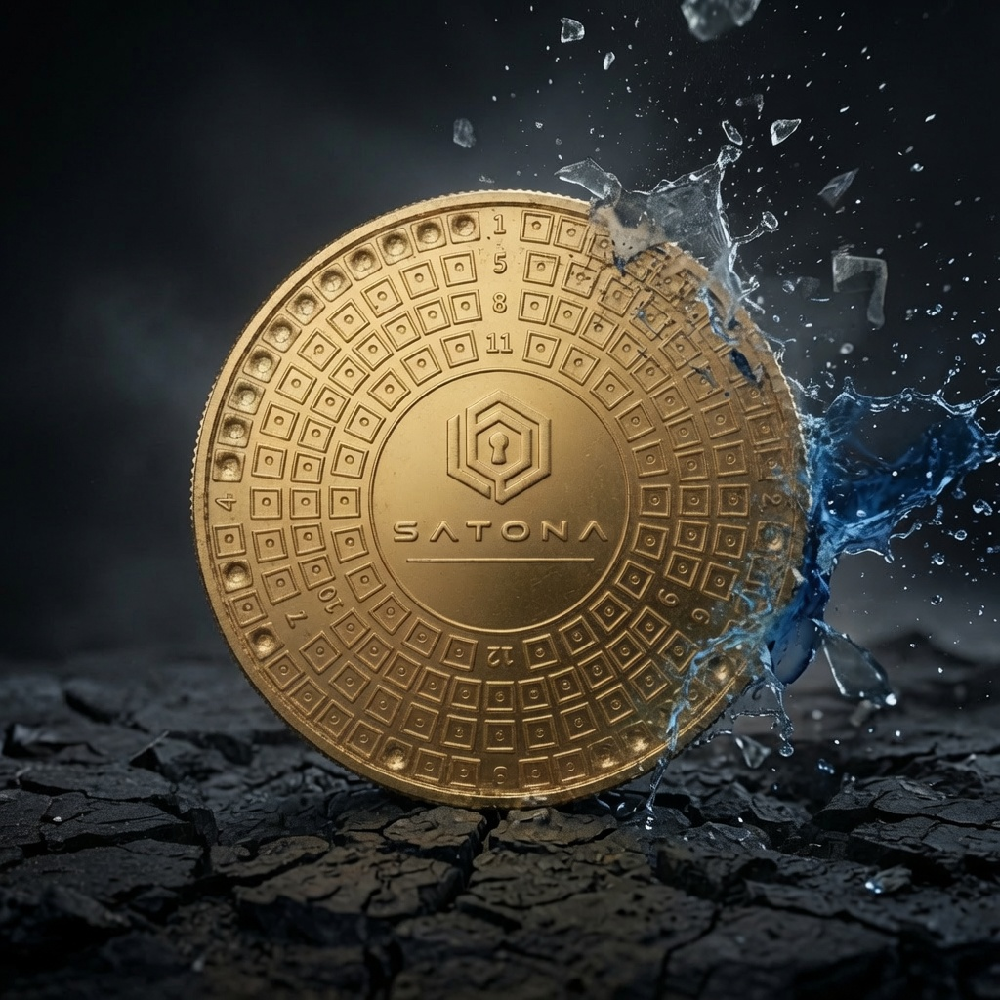

KORROSION
Oxidationsbeständig
Messing rostet nicht.
UNSICHTBARE SEED-PHRASE • BIP39-KOMPATIBEL
SATONA wandelt jedes BIP39-Wort automatisch in universären Binärcode um, bevor es dauerhaft auf einer massiven Messingplatte markiert wird. Selbst wenn jemand Ihre Sicherung findet, erscheint Ihre Wiederherstellungsphrase niemals im Klartext.
Kompatibel mit BIP39-Wiederherstellungsphrasen führender Wallets. Die Wallet-Logos sind Kompatibilitätshinweise, keine Empfehlungen.


DAS KONZEPT
Der basiert auf einer unveränderlichen Liste von 2.048 Wörtern, die von 0 bis 2.047 nummeriert sind.
SATONA wandelt die Position jedes Wortes Ihrer Wiederherstellungsphrase mit unserem hier verfügbaren Tool in Binärcode um. Anschließend markieren Sie die Platte dauerhaft mit dem im Kit enthaltenen automatischen Körner.
FÜR DIE EWIGKEIT KONZIPIERT
Eine physische Sicherung, entwickelt für Feuer, Korrosion, Stöße und die Zeit.

KORROSION
Messing rostet nicht.
TEMPERATUR
Über den Temperaturen eines gewöhnlichen Hausbrandes.

WIDERSTANDSFÄHIGKEIT
Widersteht Stößen und Quetschbelastungen.

ZEIT
Für jahrzehntelange Haltbarkeit entwickelt, an der Luft oder bei längerer Eintauchung.
VORGEHENSWEISE
01
Finden Sie die binäre Entsprechung jedes Wortes Ihrer Wiederherstellungsphrase.
Verwenden Sie den Konverter unten oder laden Sie die BIP39-Liste herunter, um vollständig offline zu arbeiten.
02
Schrauben Sie das konische Ende des automatischen Körners ab, setzen Sie eine der beiden mitgelieferten Spitzen ein und schrauben Sie ihn wieder zusammen.
Der Körner ist dann einsatzbereit.
03
Setzen Sie die Spitze in der Mitte des zu markierenden Quadrats an und üben Sie Druck aus, bis es klickt.
Wiederholen Sie dies bis zu 8 Mal auf demselben Quadrat, um eine tiefere, dauerhafte Markierung zu erzielen.
04
Prüfen Sie vor dem Aufbewahren der Platte jede Markierung sorgfältig, damit Ihre Phrase korrekt rekonstruiert werden kann.
Bewahren Sie die Platte danach an einem diskreten, sicheren Ort auf, den nur Sie kennen.
WARUM PHYSISCH
Eine Wiederherstellungsphrase ist ein besonders sensibles Geheimnis. SATONA bietet ein physisches Format für eine durchdachte Offline-Aufbewahrung, ohne bewährte Sicherheitsmaßnahmen zu ersetzen.
01
Die gesamte Umwandlung erfolgt offline. Ihre Wiederherstellungsphrase verlässt niemals Ihre Umgebung.
02
Jedes BIP39-Wort wird vor dem Markieren in seinen universellen -Code umgewandelt.
03
Der automatische Körner markiert die Messingplatte dauerhaft. Weder Hammer noch Batterien oder elektrische Geräte sind erforderlich.
OFFLINE ZUERST
Für die tatsächliche Nutzung von SATONA sollten Sie die herunterladbare BIP39-Liste verwenden und den gesamten Umwandlungsprozess offline durchführen.
RISIKO 1
Ein kompromittiertes Gerät kann Ihre Eingaben aufzeichnen, einschließlich Ihrer Wiederherstellungsphrase.
RISIKO 2
Eine auf einer Website eingegebene Phrase kann durch eine schädliche Erweiterung, eine Sicherheitslücke oder ein bereits kompromittiertes Gerät offengelegt werden, selbst wenn die Website selbst keine Daten speichert.
RISIKO 3
Wer Ihre Wiederherstellungsphrase erhält, kann möglicherweise Ihre Wallet wiederherstellen und die Kontrolle über die darin geschützten Vermögenswerte übernehmen.
Die Online-Tools von SATONA dienen zum Lernen oder zur Umwandlung eines einzelnen Wortes. Für die tatsächliche Nutzung sollten Sie vollständig offline arbeiten.
PRODUKTINFORMATIONEN
Für eine dauerhafte physische Sicherung Ihrer Wiederherstellungsphrase entwickelt. Das SATONA-Kit enthält alles, was Sie benötigen, um Ihre BIP39-Wiederherstellungsphrase dauerhaft und vollständig offline zu sichern. Alle Komponenten wurden für eine einfache, präzise und langfristige Nutzung ausgewählt.
FAQ
Nein. SATONA ist ein physischer Träger, auf dem die Informationen einer BIP39-Wiederherstellungsphrase binär gesichert werden.
Eine Hardware Wallet verwahrt und verwendet private Schlüssel für Wallet-Vorgänge. SATONA ist keine Wallet: Es sichert BIP39-Wiederherstellungsinformationen physisch, damit sie bei Bedarf rekonstruiert werden können. Beide Funktionen können sich ergänzen.
Nein. SATONA speichert keine digitalen Vermögenswerte. Die Platte enthält nur die binäre Darstellung der Wiederherstellungsinformationen, die Sie darauf festhalten.
Wer Ihre vollständige Wiederherstellungsphrase besitzt, könnte die zugehörige Wallet auf einem kompatiblen Gerät wiederherstellen und auf die geschützten Vermögenswerte zugreifen. Behandeln Sie sie deshalb als hochsensible Information.
SATONA ist für Wallets vorgesehen, die eine englische BIP39-Wiederherstellungsphrase mit bis zu 24 Wörtern nutzen. Prüfen Sie zuvor die Dokumentation Ihrer Wallet, denn nicht jede Wallet nutzt BIP39.
Nein. Markiert wird der binäre 11-Bit-Index jedes BIP39-Wortes, nicht das Wort selbst.
SATONA kann bis zu 24 BIP39-Wörter codieren: Wörter 1–12 auf der Vorderseite und Wörter 13–24 auf der Rückseite.
Ja. Nach dem Download der BIP39-Liste können Umwandlung und Markierung vollständig offline erfolgen; das ist die empfohlene Methode.
Das Kit enthält eine massive SATONA-Messingplatte, einen automatischen Körner, zwei Spitzen, eine hochwertige Magnetbox, eine Anleitung und einen QR-Code zur SATONA-Anleitung.

SATONA
Komplettes SATONA-Kit
49,90 €